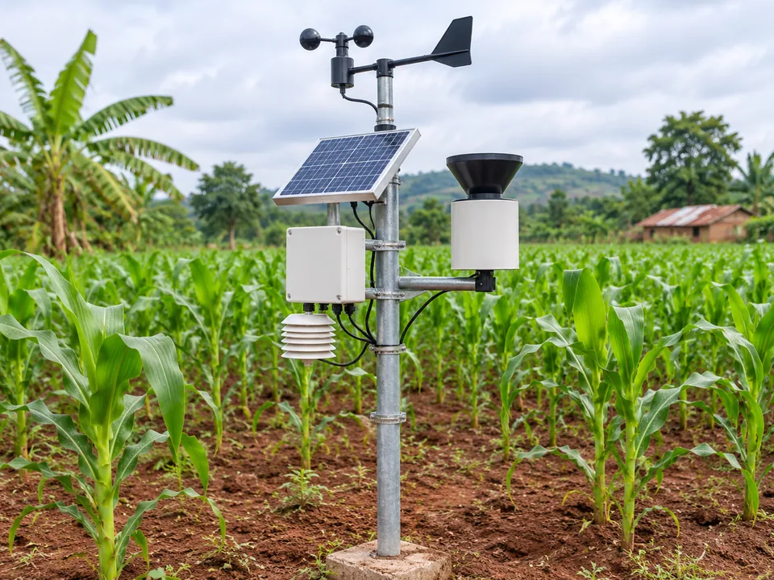

How it works
Imarika turns readings from weather stations near your farm into simple advice for the week.
From weather station to your phone
Stations measure
Weather stations in Busia County measure rain, temperature and humidity during the day.
We check the readings
Faulty values are removed, so they are not used.
We forecast 7 days
A forecasting model uses past readings to predict the next 7 days.
Advice reaches you
Simple advice about rain, planting and spraying, on this website and by text message.
What to know
- Stations switch off overnight.
- Rain is measured between 8 am and midnight. Rain that falls at night is not measured.
- Beyond about a day, the forecast mostly repeats the recent daily pattern. Read later days as a rough guide.
- Only some stations send data. The others show as Not reporting and get no forecast.
- When the forecast shows no change from day to day, we do not give planting or spraying advice.
What the colours and words mean
Every station gets one word for the coming week. The colour and the icon always match the word.

| Word | What to do |
|---|---|
| Very heavy rain | If you are in a flood-prone area, move to higher ground. |
| Heavy rain | Clear drains and avoid low-lying fields. |
| Good rain for planting | Rain may suit planting. Dry spells after the next 7 days are not checked. |
| Rain coming, wait before spraying | Delay spraying and harvesting on the rainy days. |
| No alerts this week | There is a forecast but no rain alerts for this station this week. |
| Not reporting | This station sends no data, so there is no forecast. Check a nearby station. |
About the project
Imarika is a final-year project at Strathmore University by Philip Tait Lemaron.
Weather station data comes from the iLabAfrica Anga Weather Network.